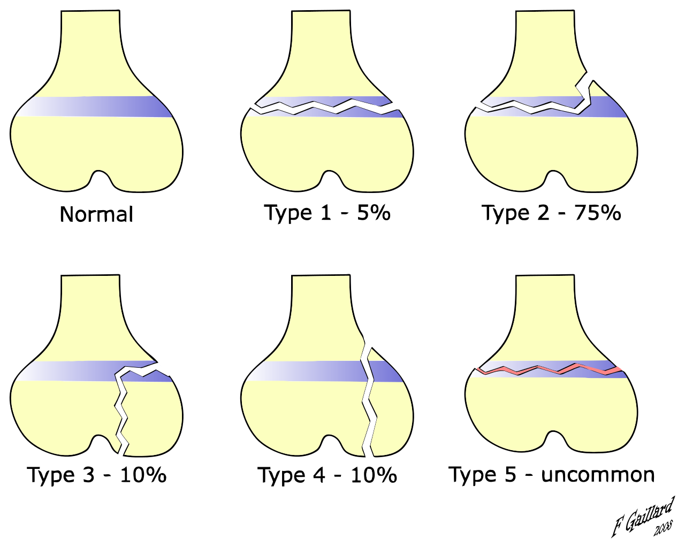

2 Allmän frakturlära
- Hög ålder
- Kvinna
- Rökning
- Osteoporos
- Ökad fallrisk
2.1 Klassifikation
Hos vuxna anses allt som inte är diafysärt som metafysärt. Begreppet epifys används därför endast hos barn med öppna fyser!
End segment = Område lika långt som den bredaste delen av benet
Mid segment = resten
Klassifikationer inkluderar:
- Grad av våld
- Lågenergiskada — Ofta i samband med osteoporos
- Högenergiskada
- Anatomisk lokalisation
- Axial vs appendikulär fraktur
- Specifik lokal — Har betydelse för läkning och prognos
- Diafysär
- Metafysär — Läker snabbare än diafysär
- Fysär — Tillväxtzon hos barn, kan ge tillväxtstörning
- Epifysär — Kan ge tillväxtstörning om frakturen går in i fysen
Begreppet används inte om fysen slutits. - Intraartikulär — Engagerar led
- Extraartikulär — Engagerar ej led
- Epikondylär
- Kondylär
- Subkapitulär
- Suprakondylär
- Transkondylär
- Ligamentavulsion — Bendel med ligamentfäste slits av
- Apofysavulsion — Ger ej tillväxtfel.
- Höftfrakturer
- Cervikal — Genom collum femoris.
- Pertokantär — Genom trochanter minor/major.
- Subtrokantär — Från trochanter minor tom 5cm distalt om denna.
- Utseende
- Longitudinell
- Transversell
- Spiralfraktur
- Kompressionsfraktur
- Komminut (5=kompression av tillväxtzonen)
- Patologisk — t.ex tumör, hereditär sjukdom
- Stressfraktur — uppstår vid återkommande belastning under tid, kan progrediera till “riktig” fraktur
- Mjukdelsskada
- Öppna vs slutna
2.1.1 Klassifikation hos barn
Skiljs från vuxna då barns tjocka periostie och mjuka skellett ofta ger annan bild.
- Böjningsfraktur
- Inkomplett Kompressionsfraktur (torus-fraktur)
- Inkomplett gångjärnsfraktur (greenstick-fraktur)
- Komplett fraktur — Vanligare hos äldre barn
- Utifrån lokal jmf tillväxtzon
- Salter-harris 1-5

- Salter-harris 1-5
2.2 Frakturläkning
Det finns principiellt 2 typer av läkningar:
1. Direkt läkning utan synlig kallus
2. Indirekt läkning med kallus
Läkningstyp beror på huruvida (icke-splittrade) frakturer blir stabilt anatomiskt reponerade.
2.2.1 Intern fixation
Åstadkoms ofta med skenor av rostfritt stål1.
Märgspikar består oftast av titan som är mer elastiskt och bildar ett bakteriedödande oxidlager.
På ställen med låg belastning kan resorberbara implantat av polyestrar användas.
Legering av järn, krom, nickel eller kobolt-kromolybden-legering↩︎